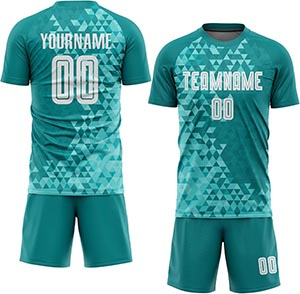
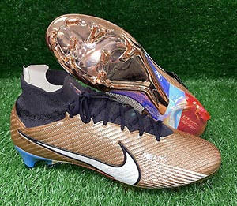
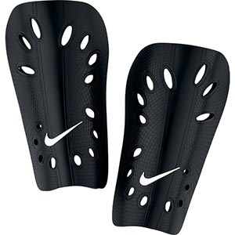
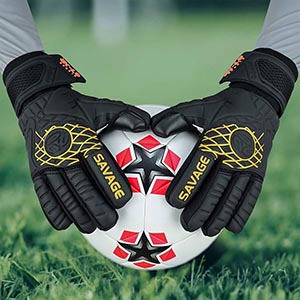
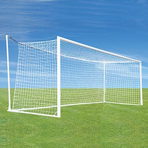
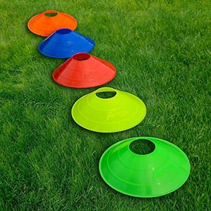

The Kit: A kit includes a jersey, shorts, and knee-length socks.

The Cleats: Cleats are special shoes with spikes on the bottom to prevent slipping on the grass.

Shin Guards: These are cushioned plastic plates to protect the shins from bruises and injury.

The Gloves: The goalkeeper wears special gloves to protect their hands and grip the ball tightly when goalkeeping.

Goal: The standard dimensions of a soccer goal are 24 feet wide and 8 feet tall. Ball: The standard size for a soccer ball is size 5.

Cones: Cones are used to practice dribbling the ball between them. Corner Flag: The corner flags indicate where the corners of the field are located.